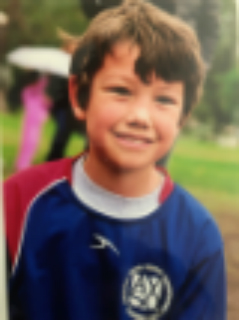

Soccer
Images of me and my teammates this year.
Why Soccer?
 Most of the sports that I've played in my life, I've quit. The only sport that I havent quit yet, is soccer. I started playing soccer ever since I was three years old. Right when I started this sport, I knew that this would be the sport that I was going to play for my whle life. The more I grew up, the more I loved playing soccer. The more I loved playing soccer, the more I practiced. The more I practiced, the better and better and better I got. Soon, I was one of the better kids on the team. I would score at least one goal every game and one time I even scored four. I loved playing soccer. The fast paced game made me fall in love with it. When I moved from California to Massachucett I continued to play soccer. By then, I had already quit half of the sports I was playing. Soon town soccer was coming to and end, and ttravel soccer was starting up. I was nervous trying out, but tried my hardest. It ended up paying off, becasue in the end, I ended up making one of the top teams! I was so excited.
Most of the sports that I've played in my life, I've quit. The only sport that I havent quit yet, is soccer. I started playing soccer ever since I was three years old. Right when I started this sport, I knew that this would be the sport that I was going to play for my whle life. The more I grew up, the more I loved playing soccer. The more I loved playing soccer, the more I practiced. The more I practiced, the better and better and better I got. Soon, I was one of the better kids on the team. I would score at least one goal every game and one time I even scored four. I loved playing soccer. The fast paced game made me fall in love with it. When I moved from California to Massachucett I continued to play soccer. By then, I had already quit half of the sports I was playing. Soon town soccer was coming to and end, and ttravel soccer was starting up. I was nervous trying out, but tried my hardest. It ended up paying off, becasue in the end, I ended up making one of the top teams! I was so excited.
Soon, I got a little cocky. I stopped practicing that much, and since I made a good team for travel I thught I was a lot better than I actually was. I was on the second best travel team in Andover, and I thought I was on the team for the World Cup. As years went on, I soon stayed on the same team, while some teammates each year were getting moved up to the better team. Once I was in 8th grade, I realized what was happeneing. I was stuck on the 2nd best team, but all the good players were the higher team. When this happenned, I realized this, I decided I was going to work harder than ever. I scheduled three private coaches, and I was doing club soccer as well. When tryouts for highschool finally arived, I was able to show off my hardwork, and I made the freshman team, along with George Safi. That season I was able to score 15 goals in 1 season!.